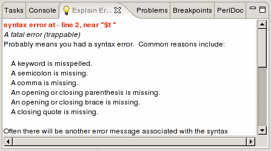
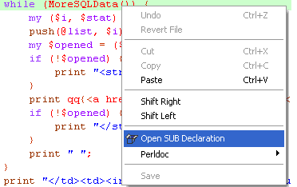
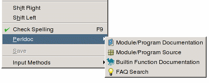
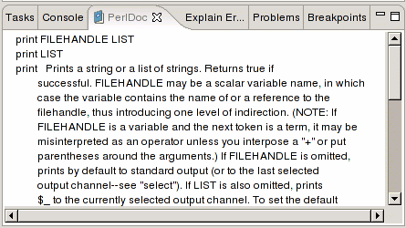
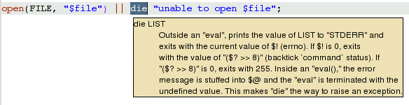
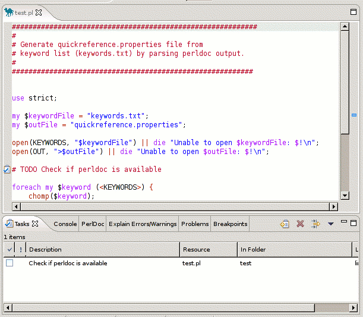
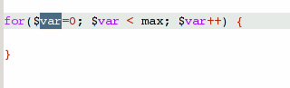
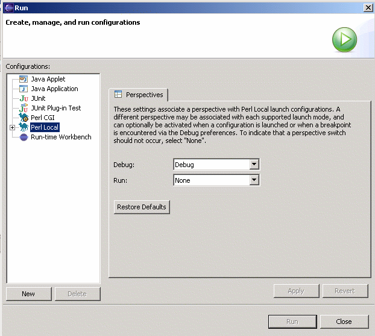

Explain Errors and Warnings
In addition to displaying warnings and errors, the editor is capable of
explaining them in more detail.
To get an Error/Warning explanation, right-click the Error/Warning icon
and select Explain
Errors/Warnings from the dropdown menu.
The explanation(s) will be displayed in the
Explain Errors/Warnings
View.

Open SUB Declaration
Open SUB Declaration allows the user to search for the declaration of a
specific SUBroutine.

The search first determines what is selected. If no text is selected,
it attempts to find a subroutine name at the current cursor position.
The search will fail if no subroutine name is selected.
Due to the dynamic nature of Perl programs, the search is not entirely
reliable. For subroutine names qualified by a package prefix, an attempt
will be made to locate the appropriately named module file using the @INC path.
For unqualified subroutine names, the search will first occur in the current
editor and then extend to modules referenced by 'use' statements.
If the subroutine declaration is found in a file inside workspace,
it will be highlighted in an existing or new editor.

Perldoc
To retrieve Perldoc information, select a keyword or text and choose
Perldoc
from the context menu or press
Shift+Ctrl+H.
If nothing is selected, an input dialog will appear.

If Perldoc entries are found, they are displayed inside the
Perldoc
View.

NOTE: Perldoc has to be installed and available in the system PATH,
otherwise this feature will not work.
Quick Reference
Apart from Perldoc support, a quick reference feature is available. This
feature has the advantage that no perldoc has to be installed on the
system but does not provide as much information as perldoc.
To view the Quick Reference, select a keyword and move the mouse pointer
over the selection.
A tooltip with a short description of the keyword should appear.

Code Assist
Code Assist features try to assist the user during source code editing.
NOTE: The features currently implemented in EPIC may not be
fully functional but will be improved in the future.
Variable Inspection
When pressing one of the auto completion characters
$ @ % the
editor displays all defined variables in a list. From the list the user
can select the variable that should be inserted in the source code.
Module Inspection
The editor tries to display methods available in modules when the auto
completion characters
> or
: are pressed.
NOTE:
Currently the
Indirect Object Invocation is not recognized by code assist.
This code block will not work:
$smtp = new Net::SMTP;
$smtp->[no content assist]
This one will
work:
$smtp =
Net::SMTP->new(.....);
$smtp->[content assist]
TODO Markers
TODO Markers are a very convenient way to add todos to the
Eclipse task list.
A TODO marker is generated when a
#TODO any text
is found in the Perl source code.
You can customize the keywords which mark ToDos in the
preferences (
Preferences > Perl EPIC >
Task Tags).
On deletion of the
#TODO comment, the
TODO Marker
is also deleted.

Templates
Templates allow for easy insertion of predefined text segments. In
addition to normal text these segments can also include pre-defined
variables that are included at runtime as well as variables that are
specified by the user when the template is inserted.
Defining Templates
Templates are defined in the EPIC Preferences (
Window >
Preferences...).
To define a new template press the
New... button.
To insert pre-defined variables press the
Insert Variable...
button.

In addition to pre-defined variables the user can
specify additional variables ( using the syntax ${varname} )
which can be edited
when the template is inserted. When the first variable is inserted
variables with the same name will automatically be changed.
Using Templates
Templates are invoked by typing some characters and pressing
Ctrl+Space.
Templates matching the typed characters will be displayed in a list. A
preview is also available.
If the template contains user defined variables the user can press the
TAB
key to jump to the next variable after the template has been inserted.

Source Formatter
EPIC uses PerlTidy for source code formatting (PerlTidy is included in
the EPIC package).
To format the source code select S
ource > Format from the
Eclipse menu or use
Ctrl+shift+f.
PerlTidy settings can be changed in the
Source Formatter
preference page.
NOTE: Source formatting might take a while if the source code
has a lot of lines.
Source Folding
The editor supports folding of POD comments and subroutines.
Source Folding can be disabled in the Editor Preference page.
NOTE: On big files source
folding can decrease performance. So if you experience slowdowns,
disabling source folding might help.
Refactoring
Extract Subroutine
Extraction of subroutines is supported by the use of the CPAN
Devel::Refactor module.
To extract a subroutine mark the code to extract and select
Refactor>Extract
Subroutine from the popup menu.
In the popup menu insert the name of the new subroutine and press
Enter.
The new subroutine will be placed at the end of the Perl script (before
__END__ section) and the selection will be replaced with the
subroutine call.
NOTE: The extraction might not work properly at the moment
because the Devel::Refactor module is in an early stage of development.
With upcoming versions of the module this function should become more
reliable.
HTML Export
To export select Source > Export > HTML from the Eclipse menu and
specify an output file.
HTML export settings can be changed in the
Source Formatter
preference page.
NOTE: For HTML export to work a working
Source Formatter
is needed.
Outline View
The Outline View displays packages and subroutines defined in the
edited file. Modules referenced by 'use' statements are also shown.
By clicking on the module/subroutine name the editor will jump to
the appropriate position in the source code. When the cursor is moved
inside of a subroutine's definition, the subroutine will become selected
in the Outline.
Subroutines named
new will get a different icon.
Using the Perl Debugger
Launching Perl Programs
You may launch your Perl programs from the workbench. Programs
may be launched in either run or debug mode.
- In run mode, the program executes, but may not be
suspended or examined.
- In debug mode, execution may be suspended and resumed, variables
may be inspected, and expressions may be evaluated.
The environment a Perl program is to be executed in is defined via
"Launch Configurations". A launch configuration defines
- if the program is to be executed in a CGI or normal Perl
environment
- the host the program is to be executed on
- the program to execute
- execution parameters to pass
- environment variables (for CGI environment)
- configuration data for the WEB server used to provide the
CGI framework
Launching Perl programs in run mode

- Select Menu->Run
- Within the dialog appearing
select the configuration type:
Perl(local): Run a Perl script on the local machine
Perl-CGI(local): Run Perl programs in a CGI environment
Perl(remote): Run Perl script on a remote machine
and press the new button to create a new launch configuration.
- Adjust launch configuration attributes. For details see Configuring
Launch Configurations .
- Press the "Run" Button
This executes the program. The programs console output will be
shown in the console window. The console window also accepts keyboard
input to be passed to the program.
If you switch to the debug view you have additional control over the
execution of the program. For details see
Debug
View .
Launching Perl Programs in debug mode

Before debugging a program you may want to set break points to stop
program execution at certain source code locations. For details see
Debug
View .
- Select Menu->Debug
- Within the dialog appearing
select the configuration type:
Perl(local): Run a Perl script on the local machine
Perl-CGI(local): Run Perl programs in a CGI environment
Perl(remote): Run Perl script on a remote machine
and press the new button to create a new launch configuration.
- Adjust launch configuration attributes. For details see
.
- Press the "Debug" Button
If you switch to the debug view you have additional control over the
execution of the program. For details see
Debug
View .
Re-launching a Perl Program
The workbench keeps a history of each launched and debugged program.
To relaunch a program, do one of the following:
- Select a previous launch from Run or Debug
button pull-down menus.
- From the menu bar, select Run > Run
History or Run > Debug History
and select a previous launch from these sub-menus.
- In the Debug view, select a process that you want to relaunch,
and select Relaunch from the process's pop-up menu.
To relaunch the most recent launch, do one of the following:
- Click the Run or Debug
buttons (without using the button pull-down menu).
- Select Run > Run Last Launched
(Ctrl+F11), or Run > Debug
Last Launched (F11) from the workbench menu bar.
Configuring Launch
Configurations
Perl(local): Running a Perl script on the local machine

- Enter the name for the launch configuration in they "Name" field.
- In the "Configuration" tab
"Project" field: select the project to debug.
Note: Only Perl projects (projects associated with a Perl nature) will
be shown. If the project you require isn't shown see Converting an existing
Project for adding a Perl nature to your project.
"File to execute" field: select the Perl file to execute.
Note: Only files associated with the Perl editor will be shown. See Associating Files with
the Perl
editor for details.
"Commadline Parameters" field: Enter command line parameters
to
pass to the selected perl script
- Press the "Apply" button
Perl-CGI(local): Run Perl programs in a CGI environment

- Enter the name for the launch configuration in they "Name" field.
- In the "Web Server" tab
"HTML Root Directory" Field: Enter the base directory that
contains all HTML files or use the "Browse" button to select the
appropriate directory.
"HTML Startup File" Field: Enter the file name to be shown
in
the browser after startup or use the "Browse" button to select
this file.
"CGI Root Directory" Field: Enter the base directory that
contains all CGI files or use the "Browse" button to select the
appropriate directory.
"Extension for CGI files" Field: this is
a comma separated list of
file extensions (each starting with a "." ) used for
CGI files in the project.
- In the "CGI Environment" tab
CGI-Script Environment Variables Field: Sorted list of environemt
variables to be set for CGI scripts to be executed. Use the
following syntax to specify environment variables: name=value.
- In the "Browser" tab
There are two possible settings:
Select "Custom Browser":
specify the path to the browser executable and add the required
command line parameters. Use "%1" as a place holder for the HTML file
to be opened.
Select "Default System Browser":
to use the browser defined as default browser by your OS
preferences.
- Press the "Apply" button
Perl Remote: Debug Perl script on a remote machine
Some points to consider:
- you need a Perl interpreter installed on your target machine
- the EPIC debugger opens a network connection between local and
remote host (port number can be specified in the corresponding launch
configuration). So have a look at your firewall configuration.
- Scripts executed and code shown are from different sources:
EPIC displays the code present on your local machine and executes
a copy of this code on the remote host. So if you make changes within
your project please make sure to transfer these changes to the remote
host (see below for further details).
This problem gets more significant for code/modules provided by your
Perl installation. If modules on your local and remote machine differ
debugging results may be quite meaningless. So try to have the
same Perl version installed on both machines and make sure all
modules you require (and are not part of your Eclipse project)
are identical.
- Include Path handling
if the include path references directories within your project or
directories that are linked into your projects EPIC will include these
modules in the list of files to be copied to the remote host and adjust
the INC-path for your remote machine accordingly.

- Enter the name for the launch configuration in they "Name" field.
- In the "Configuration" tab
"Project" field: select the project to debug.
Note: Only Perl projects (projects associated with a Perl nature) will
be shown. If the project you require isn't shown see Converting
an existing
Project for adding a Perl nature to your project.
"File to execute" field: select the Perl file to execute.
Note: Only files associated with the Perl editor will be shown. See Associating
Files with
the Perl
editor for details.
- "Local Host IP": This is the IP-address used by the
remote host to connect to your local machine. In most cases the default
value is appropriate.
- "Target Host Project Installation Path": The location on
the remote machine, where your Eclipse project should be copied to.
- "Port": Port used to transfer data between local and
remote host.
- "Create Debug Package": If checked a ZIP file containing
all data to be transfered to the remote machine is created. This file
is stored at the location indicated in "Debug Package File
Path".<>
- <>Press the "Debug" button.
- Extract the ZIP file to the location on your remote machine
indicated in "Target Host Project Installation Path".
- Start the script "start_epicDB.pl" on your remote machine
(it is located in the directory indicated by "Target Host Project
Installation Path").
- Enjoy debugging ...
Break Points
The Perl debugger supports
line break points and
regular
expression breakpoints. Both types of breakpoints are set on
an executable line of a program. If enabled they suspend thread
execution before
the corresponding line of code is executed. Regular expression
breakpoints
additionally extract the regular expression contained in the line of
code they are associated with and enable you to debug the regular
expression within the
RegEx-Plugin.
The following symbols are used to indicate breakpoints :
Status
|
Line
Break Point
|
Regular
Expression
Break Point
|
Enabled
|

|

|
Disabled
|
|

|
Registered with debugger
|

|
|
Note:
Regular Expressions Break Points are still in an experimental state and
will at the
moment only work for expressions of the type:
Expr1 =~ <delim>regexp<delim>modifier;
Modifiers are ignored.
Setting Break Points
- In the editor area, open the file where you want to add the
breakpoint with the Perl editor.
- Directly to the left of the line where you want to add the
breakpoint, open the marker bar (vertical ruler) pop-up menu and select
Add Breakpoint or Add RegExp Breakpoint.
While the breakpoint is enabled, thread execution suspends before
that line of code is executed.
Enabling or Disabling Break Points
Open the debug view, open the
breakpoint
view
and use the check box in
front of the break point to enable or disable the break point.
Removing Break Points
There are two possible ways for removing a breakpoint:
- Right click on the breakpoint symbol in marker the bar (vertical
ruler) of the editor pop-up menu and select Remove Breakpoint.
- Open the debug view, open the breakpoint window (if this window
is not visible see Adding
and
Removing views ), right-click the breakpoint you want to remove and
select Remove.
Views in the Debug Perspective
Debug View

This view allows you to manage the debugging or running of
programs in
the workbench. It displays the stack frame for the suspended threads
for each target you are debugging. Each thread in your program appears
as a node in the tree. It also displays the process for each target you
are
running.
If the thread is suspended, its stack frames are shown as child
elements.
Variable View

When a stack frame is selected, you can see the visible variables in
that
stack frame in the Variables view.
The Variables view shows the value of primitive types.
Complex variables can be examined by expanding them to show their
members.
Global variables (including Perl internal variables) are marked with
an  icon, local variables with an
icon, local variables with an  icon.
icon.
If the value of a variable has changed since the last execution step
it is
displayed in red.
If changes in inner levels of complex variables have occurred the
path to the changed variables is indicated via delta symbols:

This makes it possible to see these kind of changes even if variables
are collapsed.
Customizing the Variables View
You can customize the presentation with the configuration menu.
Show detail pane
To show the detail pane select "Vertical View Orientation" or
"Horizontal View Orientation" . Select "Variables View Only" to
disable it.
The details pane shows the value of
primitive variables (especially useful for string variables).
Select Variables to display
The variables view allows to select the following types of
variables for displaying by checking the corresponding menu entry:
- Perl internal Variables
these are variables provided by the Perl interpreter like $_, %INC
etc. .
- Global Variables
Variables visible from every where in your program.
- Local variables
more correctly called "lexical" variables in Perl. Variables declared
with my .
To show lexical variables you need to install
the Perl PadWalker module. The PadWalkers module has some problems
which influence
viewing of local variables.
Breakpoint View

The breakpoint views shows all breakpoints, their state (see
Break
Points) and location.
By selecting one ore more break points and invoking the context menu
you can enable, disable or remove these break points.
Perl Expression View

The Perl Expression View allows you to execute any valid Perl code
within the current context of the program executed in debug mode.
- Open the Perl Debug View (Window->Open
View->Other->Epic->Perl Expression View)
- Enter the code to execute
- Press the
 symbol
symbol
Stepping through the execution of a Perl program
When a thread is suspended, the step controls can be used to step
through the execution of the program line-by-line. If a breakpoint is
encountered while performing a step operation, the execution will
suspend at the breakpoint and the step operation is ended.
Step over
- Select a stack frame in the Debug view. The current line of
execution in that stack frame is highlighted in the editor in the Debug
perspective.
- Click the Step Over button (
 )
in the
Debug view
toolbar, or press the F6 key. The currently-selected line
is executed and suspends on the next executable line.
)
in the
Debug view
toolbar, or press the F6 key. The currently-selected line
is executed and suspends on the next executable line.
Step into
- Select a stack frame in the Debug view. The current line of
execution in the selected frame is highlighted in the editor in the
Debug perspective.
- Click the Step Into () button in
the Debug view
toolbar, or press the F5 key. The next expression on the
currently-selected line to be executed is invoked, and execution
suspends at the next executable line in the method that is invoked.
Run to return
- Select a stack frame in the Debug view. The current line of
execution in the selected frame is highlighted in the editor in the
Debug perspective.
- Click the Run to Return button (
 )
in the Debug
view toolbar or press the F7 key. Execution resumes until
the next return statement in the current method is executed, and
execution suspends on the next executable line.
)
in the Debug
view toolbar or press the F7 key. Execution resumes until
the next return statement in the current method is executed, and
execution suspends on the next executable line.
RegExp Plugin
Enabling the RegExp View
To display the R
egExp View select
Window > Show View..
> Other... from the Eclipse menu and select the
RegExp View
from the list.
Using the RegExp Plugin
The RegExp plugin is a small tool to debug Regular Expressions.
To check if a Regular Expression is valid, press the run

icon. If the
Regular Expression matches the text it will be signaled by a green
icon.
If the Regular Expression contain brackets the resulting string will be
colored.
Regular Expression shortcuts are available via the Context Menu.
Debugging Regular Expressions
The Single Step
feature allows for a step by step inspection of the regular expression.
If no sub expressions (...) are defined by the user the RegExp
Plug-in
tries to use logical blocks for matching, otherwise the already
existing
subexpressions are used.
The following
buttons are provided:
 Reset
(clears all color markers)
Reset
(clears all color markers)
 Step
forward
Step
forward
Step
backward
Known Bugs & Problems
Debugger
Problems showing
Local Variables
The EPIC debugger uses the PadWalker module to show local (or lexical)
variables. PadWalker 0.10 does not display the values for lexical
variables declared on top-level (outside of functions and blocks)
correctly if used in debugger mode . To get around this problem put
your code within a function:
dummy();
sub dummy
{
<YOUR CODE>
}
References
Part of this document is taken from the official Eclipse documentation
provided by the Eclipse project and IBM.
EPIC uses the public domain ANTLR 2 library developed by Terence Parr
and others in the
ANTLR project.